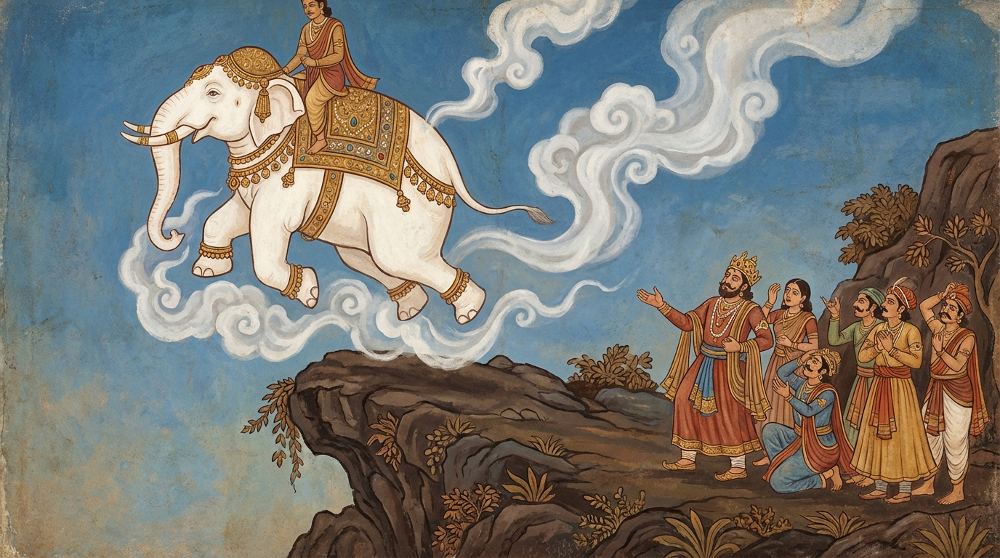

2. දුම්මේධ ජාතකය (122)
“යසං ලද්ධාන දුම්මෙධො” යන මේ ධර්ම දේශනාව බුදුරජාණන් වහන්සේ වේළුවනාරාමයෙහි වැඩ වාසය කරන සමයෙහි දේවදත්ත තෙරුන් අරබයා වදාළ සේක. ධර්ම සභාවෙහි භික්ෂූන් වහන්සේලා මෙසේ කතිකා කළහ: “ඇවැත්නි, තථාගතයන් වහන්සේගේ පුන්සඳ මඬලක් බඳු වූ ශ්රී මුඛය ඇති, අසූවක් අනු ලක්ෂණයන්ගෙන් හා දෙතිස් මහා පුරුෂ ලක්ෂණයන්ගෙන් විභූෂිත වූ, බඹයක් පමණ වූ ඝන බුදුරැස් මාලාවෙන් හාත්පස ආලෝකවත් කරන්නා වූ, පරම රූප ශෝභාවට පත් වූ ශරීරය දෙස බලා දේවදත්ත තෙරණුවෝ සිත පහදවා ගැනීමට අසමත් වෙති; ඊර්ෂ්යාවම කරති. ‘බුදුවරයෝ නම් මෙබඳු වූ සීලයෙන් ද, සමාධියෙන් ද, ප්රඥාවෙන් ද, විමුක්තියෙන් ද, විමුක්ති ඤාණ දර්ශනයෙන් ද යුක්ත යැයි’ කියනු ලබන කල්හි උන්වහන්සේගේ ගුණ වර්ණනාව ඉවසා සිටීමට නොහැකි වෙති; ඊර්ෂ්යාවම කරති” යනුවෙන් දේවදත්ත තෙරුන්ගේ අගුණ කථාවම කතා කරමින් සිටියහ. ශාස්තෘන් වහන්සේ එතැනට වැඩම කර, “මහණෙනි, කවර නම් කථාවකින් යුක්තව මේ මොහොතේ මෙහි රැස්ව සිටියේදැයි” විචාරා, “මේ නම් කථාවෙන් යැයි” පැවසූ කල්හි, “මහණෙනි, දේවදත්ත තෙරණුවෝ මාගේ ගුණ වර්ණනාව කියනු ලබන විට ඊර්ෂ්යා කළේ දැන් පමණක් නොව පෙරත් එසේ කළේ යැයි” වදාරා අතීත කතාව ගෙනහැර දැක්වූ සේක.
යටගිය දවස මගධ රට රජගහ නුවර එක් මගධ රජ කෙනෙකු රාජ්යය කරද්දී, බෝධිසත්ත්වයන් වහන්සේ ඇත් යෝනියෙහි උපත ලැබ, සකල ශරීරයෙන්ම ධවල වර්ණ වූහ. ඉහත වර්ණනා කළ පරිදි රූප සම්පත්තියෙන් යුක්ත වූහ. ඉක්බිති “මේ ඇතා ලක්ෂණ සම්පත්තියෙන් යුක්ත යැයි” සිතා රජතුමා ඔහු මංගල හස්තියා බවට පත් කළේය. එක් උත්සව දිනයක මුළු නගරයම දිව්ය පුරයක් මෙන් සරසවා, සියලු ආභරණයෙන් සැරසූ මංගල හස්තියා පිට නැඟී මහත් වූ රාජානුභාවයෙන් නගරය ප්රදක්ෂිණා කළේය. මහජනයා ඒ ඒ තැන සිට මංගල ඇතාගේ රූප ශෝභාවෙන් අග තැන්පත් සිරුර දැක, “අනේ! මේ රූපය, අනේ! මේ ගමන, අනේ! මේ ලීලාව, අනේ! මේ ලකුණු සම්පත්තිය. මෙබඳු වූ සර්ව ශ්වේත උතුම් ඇතෙක් සක්විති රජ කෙනෙකුට සුදුසු යැයි” මංගල ඇතාගේම ගුණ වර්ණනා කළහ.
රජතුමා මංගල ඇතාගේ වර්ණනාව අසා එය ඉවසාගත නොහැකිව ඊර්ෂ්යාව උපදවාගෙන, “අදම මොහු පර්වත ප්රපාතයකට හෙළා ජීවිතක්ෂයට පත් කරවන්නෙමි”යි සිතා, ඇත් ගොව්වා කැඳවා, “නුඹ මේ ඇතා පුහුණු කර ඇත්තේ කුමන ආකාරයකටදැයි” ඇසුවේය. “දේවයන් වහන්ස, මනාව හික්මවා ඇතැයි” කීවේය. “නරකට හික්මවා ඇත, මනාව හික්මවා නැතැයි” රජු කී විට, “නැත දේවයන් වහන්ස, මනාව හික්මවා ඇතැයි” ඔහු පිළිතුරු දුන්නේය. “ඉදින් මනාව හික්මවා ඇත්නම්, මොහු වේපුල්ල පර්වත මුදුනට නැංවීමට නුඹට හැකි දැයි” රජු ඇසීය. “එසේය, දේවයන් වහන්ස” යැයි ඔහු කීය. “එසේ නම් එව යි” කියා තමා බැස ඇත් ගොව්වා ඇතු පිට නංවා පර්වත පාමුලට ගොස්, ඇත් ගොව්වා පිටේ සිටියදීම ඇතු වේපුල්ල පර්වත මුදුනට නැංවූ කල්හි, තෙමේත් ඇමති පිරිස පිරිවරාගෙන පර්වත මුදුනට නැඟ, ඇතා ප්රපාතයට මුහුණ ලා සිටුවා, “නුඹ මේ ඇතා මනාව හික්මවා ඇතැයි කීවෙහි ය. එසේ නම් මොහු පාද තුනකින් සිටුවව”යි අණ කළේය. ඇත් ගොව්වා පිට මත හිඳගෙනම, “පින්වත් හස්තිය, පාද තුනකින් සිටිනු” යැයි ඇතාට විලුඹෙන් සංඥා කළේය. මහාසත්ත්වයා (එසේම කොට) පාද තුනකින් සිටියේය. නැවත රජතුමා, “ඉදිරිපස පාද දෙකෙන් සිටුවව”යි අණ කළේය. මහාසත්ත්වයා පසුපස පාද දෙක ඔසවා ඉදිරි පාද දෙකෙන් සිටියේය. “පසුපස පාද දෙකෙන් සිටුවව”යි කී විට (ඉදිරි පාද ඔසවා) පසුපස පාද දෙකෙන් සිටියේය. “තනි පයකින් සිටුවව”යි කී කල්හි පාද තුනක් ඔසවා තනි පයකින් සිටියේය. ඉක්බිති ඇතා නොවැටෙන බව දැන, “ඉදින් පුළුවන් නම් අහසෙහි සිටුවව”යි රජු කීවේය.
ඇත් ගොව්වා මෙසේ සිතුවේය: “සකල දඹදිවම මොහු හා සමාන මනාව හික්මවන ලද වෙනත් ඇතෙකු නැත. නිසැකයෙන්ම මොහු මේ ඇතා ප්රපාතයට හෙළා මරනු කැමැත්තේ වන්නේය.” හෙතෙම ඇතාගේ කන් මූලයට කර, “දරුව, මේ රජු නුඹව ප්රපාතයට හෙළා මැරීමට කැමැත්තෙන් පසුවේ. නුඹ මොහුට සුදුසු නැත. ඉදින් නුඹට අහසින් යන්නට ශක්තිය ඇත්නම්, මා ද පිට මත සිටියදීම රැගෙන අහසට පැන නැඟී බරණැස් නුවරට යව”යි කීවේය. පුණ්ය ඍද්ධියෙන් යුක්ත වූ මහා බෝධිසත්ත්වයන් වහන්සේ ඒ මොහොතෙහිම අහසෙහි සිටියහ. ඇත් ගොව්වා කතා කරමින්, “මහා රජතුමනි, මේ ඇතා පුණ්ය ඍද්ධියෙන් යුක්තය. නුඹ වැනි මඳ පින් ඇති දුෂ්ප්රඥයන්ට මොහු සුදුසු නැත. මොහු සුදුසු වන්නේ පින්වත් වූ නුවණැති රජෙකුට ය. නුඹ වැනි මඳ පින් ඇත්තෝ මෙබඳු වාහනයක් ලබා, එහි ගුණ නොදන්නා හෙයින් ඒ වාහනය ද, ඉතිරි කීර්ති සම්පත්තිය ද විනාශ කරගන්නාහ”යි පවසා ඇතු පිට හිඳගෙනම මේ ගාථාව කීවේය.
“නුවණ නැති පුද්ගලයා යම් කිසි යසසක් හෝ පිරිවර සම්පතක් ලැබ, තමාට අනර්ථය පිණිසම හැසිරෙයි. හෙතෙම තමාටත් අනුන්ටත් හිංසා පිණිසම පිළිපදියි.”
මෙහි කෙටි අර්ථය මෙයයි: “මහා රජ, නුඹ වැනි දුම්මෙධො හෙවත් ප්රඥාව නැති පුද්ගලයා පිරිවර සම්පත් ලබා තමාට අනර්ථය පිණිස හැසිරෙයි. ඒ කුමක් නිසාද යත්? හෙතෙම කීර්තියෙන් මත් වූයේ, කළ යුත්ත හා නොකළ යුත්ත නොදන්නා බැවිනි. අත්තනො ච පරෙසඤ්ච හිංසාය පටිපජ්ජති යනු තමාටත් අනුන්ටත් පීඩා කිරීම හෙවත් හිංසාව පිණිසම පවතියි. දුක් උපදවීම පිණිසම පිළිපදියි.”
මෙසේ මේ ගාථාවෙන් රජුට ධර්මය දේශනා කොට, “දැන් ඉතින් නුඹ ඔතැනම සිටිනු” යැයි පවසා, අහසට පැන නැඟී බරණැස් නුවරට ගොස් රජ මාලිගාවේ මිදුලට ඉහළ අහසෙහි සිටියේය. මුළු නුවරම කැළඹී, “අපගේ රජතුමාට අහසින් පැමිණි සුදු පැහැති උතුම් ඇතෙක් රජ මිදුලේ අහසෙහි සිටියි” යැයි මහත් කෝලාහලයක් විය. වහා ගොස් රජුට ද ඒ බව දැනුම් දුන්හ. රජතුමා පිටතට පැමිණ, “ඉදින් මට පරිහරණය පිණිස ආවේ නම් බිමට බසිනු මැනවැ”යි කීවේය. බෝධිසත්ත්වයන් වහන්සේ බිමට බැස්සහ. ඇත් ගොව්වා ද බැස රජු වැඳ සිටි කල්හි, “දරුව, කොහි සිට ආවේදැයි” විචාරා, “රජගහ නුවර සිට යැයි” පවසා සියලු පුවත් සැල කළේය. රජතුමා, “දරුව, මෙහි පැමිණීමෙන් නුඹ ඉතා යහපත් දෙයක් කළේ යැයි” සතුටට පත්ව, නගරය සරසවා, ඇතා මංගල ඇතුන් රඳවන ස්ථානයෙහි රඳවා, මුළු රාජ්යය කොටස් තුනකට බෙදා, එක් කොටසක් බෝධිසත්ත්වයන්ට ද, එක් කොටසක් ඇත් ගොව්වාට ද දී, එක් කොටසක් තමා ද තබා ගත්තේය. බෝධිසත්ත්වයන් පැමිණි කාලයේ පටන් රජුට මුළු දඹදිව රාජ්යයම අතට පත් වූවාක් මෙන් විය. හෙතෙම දඹදිව අග රජු බවට පත්ව දානාදී පින්කම් කොට කම් වූ පරිදි මිය ගියේය.

ශාස්තෘන් වහන්සේ මේ ධර්ම දේශනාව ගෙනහැර දක්වා ජාතකය සමාධාන කළ සේක. “එකල මගධ රජු වූයේ දේවදත්තය. බරණැස් රජු වූයේ සාරිපුත්ත ස්ථවිරයන් වහන්සේ ය. ඇත් ගොව්වා වූයේ ආනන්ද ස්ථවිරයන් ය. එදා හස්ති රාජයා වූයේ මම ම වෙමි.”
දෙවැනි වූ දුම්මේධ ජාතක වර්ණනාව යි.